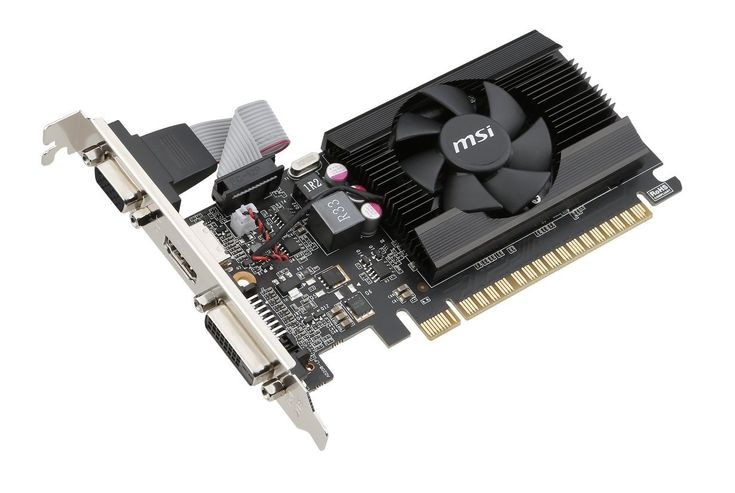
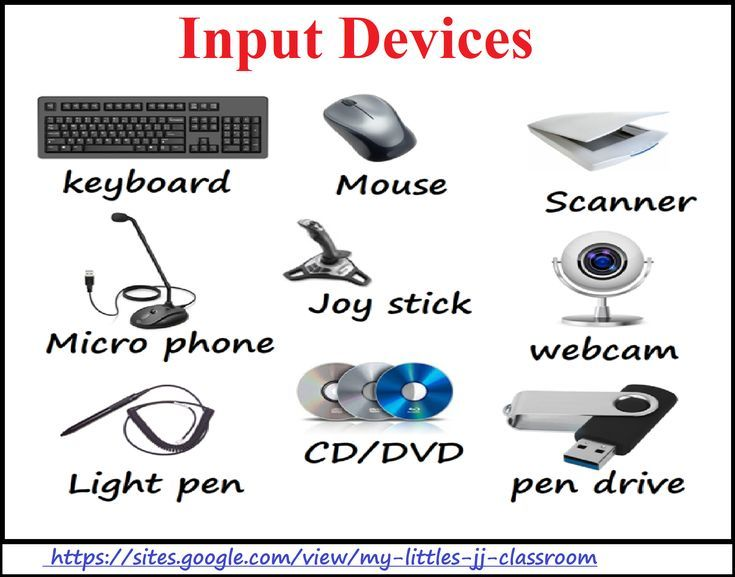
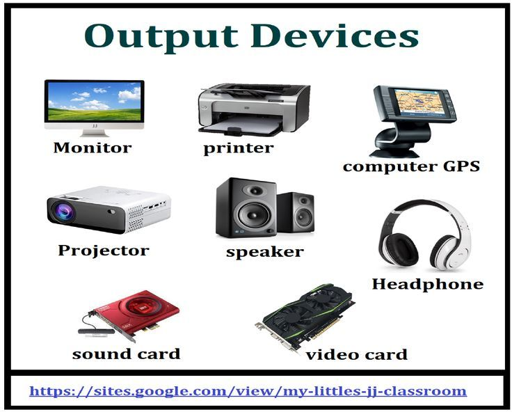

Introduction to Computer Hardware
Computer hardware refers to the physical parts of a computer system. These include internal components like the motherboard and CPU, and external ones like monitors and keyboards. Without hardware, software would have no platform to run on.
Main Internal Components
 Motherboard – the main circuit board that houses the CPU, memory, and connectors for other components.
Motherboard – the main circuit board that houses the CPU, memory, and connectors for other components. CPU (Central Processing Unit) – performs calculations and runs programs. It's often referred to as the "brain" of the computer.
CPU (Central Processing Unit) – performs calculations and runs programs. It's often referred to as the "brain" of the computer. RAM (Random Access Memory) – short-term memory that stores data currently in use. More RAM helps with multitasking and speed.
RAM (Random Access Memory) – short-term memory that stores data currently in use. More RAM helps with multitasking and speed. Storage Devices (HDD & SSD) – HDDs are traditional magnetic drives, while SSDs are faster and use flash memory.
Storage Devices (HDD & SSD) – HDDs are traditional magnetic drives, while SSDs are faster and use flash memory.-  GPU (Graphics Processing Unit) – handles image rendering, video playback, and is critical for gaming and design work.
 Power Supply Unit (PSU) – converts electrical power from your outlet into usable power for the internal components.
Power Supply Unit (PSU) – converts electrical power from your outlet into usable power for the internal components.
Peripheral Devices
-  Input Devices – tools like the keyboard, mouse, scanner, and webcam that send data into the system.
-  Output Devices – monitors, printers, and speakers that present data to the user in readable formats.
Ports and Connectors
Ports are physical interfaces for connecting peripherals. Common ones include:
- USB – for flash drives, printers, and more
- HDMI – transmits video and audio to displays
- Ethernet – for wired internet connections
- Audio Jacks – for headphones and microphones
Maintenance and Safety Tips
- Keep hardware clean and dust-free using compressed air.
- Use surge protectors to avoid electrical damage.
- Always shut down your computer properly before unplugging components.
- Handle internal parts (like RAM or the CPU) with care—use anti-static wristbands.
Why It Matters
Understanding hardware is crucial for anyone using computers regularly. It empowers users to perform basic upgrades, identify issues, and make informed purchasing decisions.